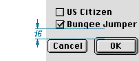

Spacing
When you lay out a dialog box, allow a minimum of 4 pixels between clickable items. If possible, include 6 pixels between items to provide sufficient space for focus rings. It's also better to place clickable items closer to nonclickable items such as group boxes, dividing lines, and the edges of modal dialogs rather than to place them closer to one another.For all windows and dialog boxes except utility windows such as toolbars and palettes, allow a minimum of 4 pixels between any item and the edge of a window or dialog box. Utility windows may have controls as close as 1 pixel from the edge of the the window or other non-clickable items. Use a consistent amount of pixel space between the border of the dialog box and its elements. This creates a balanced appearance in the dialog box.
Allow 16 pixels between groups of controls. For example, two groups of radio buttons--not two individual buttons--should be 16 pixels apart. You should measure this space from the baseline of the static text or the bottom edge of the nearest control and the top of the button below it. Figure 3-15 shows this space measured from the bottom edge of the control to the top of the control below it.
Figure 3-15 Spacing between groups of controls

If you measure from the baseline of static text rendered in 10-point Geneva, allow for 14 pixels visually.